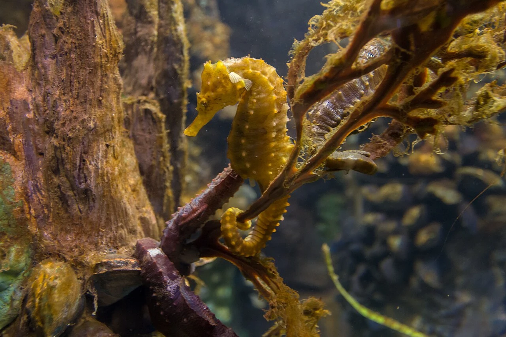

Полосатый
морской конёк.
На снимке видны костные кольца вдоль тела и хвост, свёрнутый вокруг веточки.

Как узнать
У полосатого конька трубчатое рыло, костные кольца вдоль тела и цепкий хвост. Плавать ему помогает небольшой спинной плавник.
Жизнь среди травы
В прибрежных зарослях западной Атлантики конёк цепляется за растения хвостом. Среди травы ему легче укрыться и подкараулить мелких рачков.
Сведения о виде · Florida Museum of Natural History.